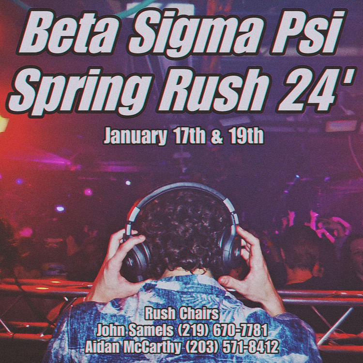

Graphic Design
My passion for design began when I ran my high school’s social media, where I loved creating graphics for school events and engaging the community. Now, I continue to fuel that passion by designing graphics for my fraternity’s philanthropy and recruitment events. This experience has deepened my appreciation for how design shapes user experiences, inspiring me to add a minor in Human-Computer Interaction & Design.

Kate's Crew Design

Rush Graphic Design